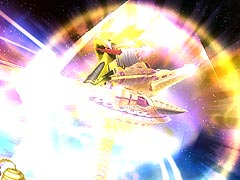
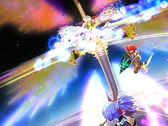
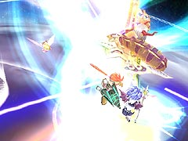

ダメージを与えるには今までと同じように本体を攻撃するだけでいいので、攻撃する機会は以前よりも増えます。

追加される攻撃として、突進があります。これは使う前に「滅びよ」などの言葉を言うので、何となく発動が分かります。ただし、どうやってよければいいかよく分かりません。

次に体を丸めた状態で、主人公の周囲にいくつも雷を発生させる攻撃です。これは、ルシアン本体を攻撃するまで続けてくるので、すぐにルシアンを攻撃すれば問題ありません。
ただし、アルウェンの魔法は跳ね返されるので、ここだけはラグナに頼る必要があります。

第1段階、第2段階と同じように青い光線を飛ばしてくる攻撃がありますが、今まで以上に数が増えます。しかし、第3段階では主人公のジャンプの飛距離が伸びるのでよけるのは難しくありません。
他にも、このかめはめ波のような攻撃も使ってきます。これは、第1 段階、第2 段階と違い、2 発しか使ってこないので、1 発目を使ってくるタイミングに合わせてジャンプすればよけられます。

最後に上の画像ではわかりにくいですが、線上の光線を出してルシアンが回転する攻撃があります。
第3段階は非常に距離感や平衡感覚がつかみにくいので、この攻撃をよけきるのは至難の業です。管理人は一度もよけきることができませんでした。
ダメージを受けやすい攻撃を多く使ってきますが、レベル20前半でも倒せますし、あらかじめ食料をたくさん用意し、落ち着いて行動すれば何とかなる相手です。